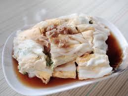

|
|
 | |
|---|---|---|---|
| 油條 | 燒餅 | 腸粉 | 心得 |
豬絞肉加鹽攪拌打至有粘性，接著加入蝦泥、太白粉、薑、胡椒粉、香菇、糖、芝麻醬、豬板油打粘，最後加入蔥油、醬油拌勻備用。
取一半填入小黃皮餛飩燒賣，蒸15分鐘。
另一半沾上糯米底層珍珠丸，蒸20分鐘。
蒸好即完成。

很久以前，在一個古老的中國村莊裡，有一位名叫阿嬤的賢慧老婦。阿嬤是村莊裡最擅長製作美味點心的人，而她的拿手好菜就是那款香氣撲鼻的燒賣。
阿嬤每逢重要的節慶或喜慶場合，總會親手製作燒賣，分享給村裡的鄰里。燒賣包的飽滿，皮薄餡多，讓人聞之垂涎欲滴。村民們稱這道美味的燒賣為「阿嬤的祝福」。
故事中傳說，阿嬤製作燒賣的每一個過程都蘊含著祝福的力量。她相信，用心製作的燒賣能夠帶來好運、平安和幸福。因此，每一個品嚐阿嬤燒賣的人都能感受到滿滿的祝福。
隨著歲月的流轉，阿嬤的燒賣成為了村裡傳統的美食，代代相傳。村民們在吃阿嬤的燒賣時，總會懷念起這位慈祥的老婦，她用燒賣串聯起了整個村莊的情感和記憶。